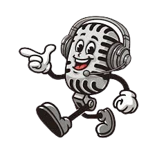

Asi que la primera sección será sobre videos, y haciendo click a la cámara de video de abajo podrás acceder a ella.
La segunda sección serán fotos de la serie que contienen mis momentos favoritos de la misma, asi que para descubrirlos pincha en la cámara de fotos de abajo.
Y para terminar, haremos uso de la música para hablar de nuevo de esta serie, asi que una vez más haz click en la imagen de abajo para acceder al apartado musical.
